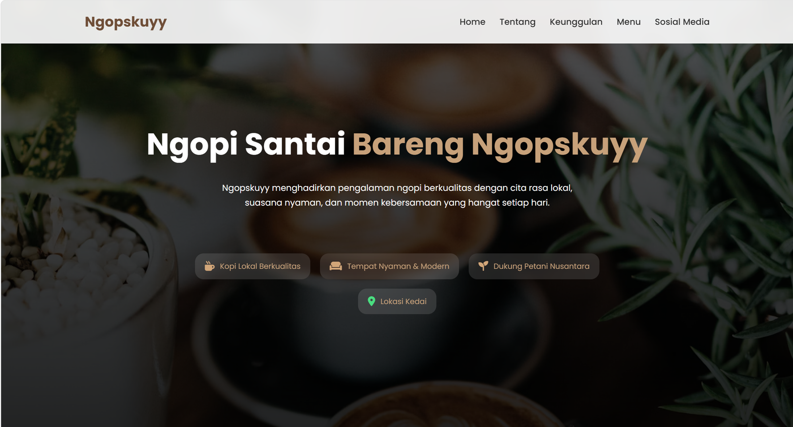
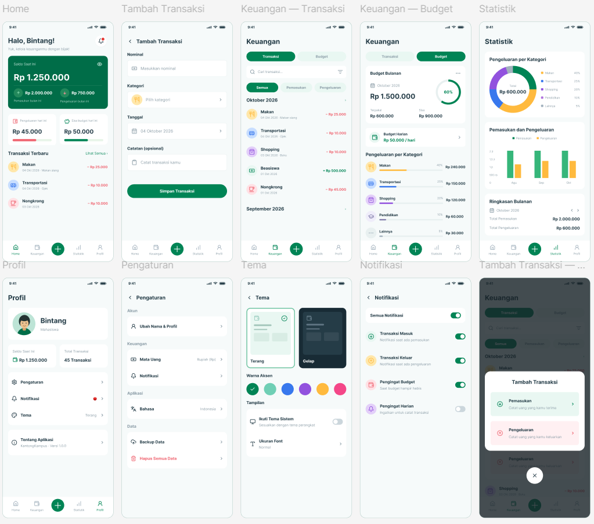

PROJECT / 01FRONT-END · BRANDING
Ngopskuyy
Landing page brand kopi lokal dengan bagian tentang kami, keunggulan, menu favorit, dan tautan media sosial.
TERBUKA UNTUK PELUANG BELAJAR
Halo, saya Achmad Jhanu Bintang, mahasiswa Informatika yang tertarik pada pengembangan web, desain antarmuka, dan teknologi yang bermanfaat.
01 / TENTANG SAYA
Saya percaya hal digital yang baik bukan hanya terlihat menarik, tetapi juga mudah digunakan.
Saat ini saya mengembangkan kemampuan di bidang teknologi informasi, mulai dari membangun halaman web sampai memahami pengalaman pengguna.
Saya mulai dari HTML dan CSS, lalu terus berlatih membuat halaman yang rapi, responsif, dan nyaman dibaca di berbagai ukuran layar. Dari situ saya menambahkan interaksi dengan JavaScript, seperti mode gelap, menu navigasi, dan validasi formulir.
Selain menulis kode, saya juga suka merancang tampilan di Figma. Landing page Ngopskuyy dan rancangan aplikasi KantongKampus adalah cara saya berlatih menghubungkan desain dengan hasil yang benar-benar bisa dipakai.
Saya masih terus belajar, dan terbuka untuk berdiskusi, berkolaborasi, atau menerima masukan.
PERJALANAN PENDIDIKAN
Dari bangku SMA sampai kuliah Informatika, saya terus memperdalam ilmu teknologi, dengan fokus pada pengembangan web dan desain antarmuka (UI/UX).
02 / KARYA PILIHAN
Klik tombol panah pada tiap project untuk melihat detailnya.

PROJECT / 01FRONT-END · BRANDING
Landing page brand kopi lokal dengan bagian tentang kami, keunggulan, menu favorit, dan tautan media sosial.

PROJECT / 02UI/UX · MOBILE APP
Rancangan antarmuka aplikasi pencatat keuangan untuk mahasiswa, dengan pencatatan transaksi, budget bulanan, statistik, dan pilihan tema.
03 / HUBUNGI SAYA
Terbuka untuk diskusi, kolaborasi, atau kesempatan belajar baru.